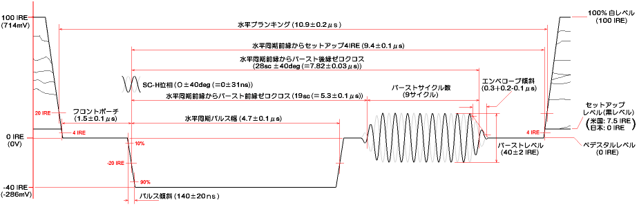

Translate this page with Babelfish Translation
Update: 2002. 6. 12
ここでは、EIA RS-170Aで規定されるNTSCビデオ信号のタイミングの取り決めについて概要だけ簡単に解説しておきます。現在はRS-170Aは、改訂されてSMPTE 170Mになっているようですが、大した違いはないし一般的にRS-170Aで通用するのでこれで覚えておけば十分でしょう。
NTSCカラーテレビジョン信号には、3つの同期信号（水平同期、垂直同期、色同期）があります。これらのタイミングは全て色副搬送波を基準に作られます。これは、輝度信号と色副搬送波の相関関係を保ち、それらのスペクトラムインターリーブの関係を確立するためです。これらの周波数は次のようになっています。
カラーサブキャリアとは、色信号を輝度信号に重畳するための副搬送波のことです。この周波数が全てのタイミングの基準になるため、許容偏差は±10Hz（±2.8ppm）しか許されていません。さらに、実際の放送においては数10pptという恐ろしい確度で管理されています。どんな原発を使っているんでしょうね。ここまで高確度となると、別の利用価値もあります。例えば、周波数カウンタの校正などは、バーストロッククロックを測って 3579545Hzを示すように原発を調整するだけで 1ppm以下の確度に合わせ込めます。
この周波数は、輝度信号とのスペクトラムインターリーブの関係を保ちつつ、音声搬送波（映像搬送波+4.5MHz）にビート障害を与えないようにとの条件で選定されたものです。この際、つじつま合わせのため元の白黒放送のときの水平・垂直周波数（fH:15750Hz、fV:60Hz）がわずかに変更されました。スペクトラムインターリーブによって画面上では次のような効果となって現れます。
水平期間を227.5scとすることにより、１ライン毎に色副搬送波の位相が反転することになります。これにより、面で見ると色副搬送波のドットが細かい市松模様のようになって妨害が目立たなくなります。色副搬送波との関係が整数比だと、１ライン毎に色副搬送波の位相が合い、色のある部分が強い縦縞となって妨害が目立ってしまいます。
１フィールドは262.5ラインなので、このようになります。また、１フレームは29.97Hzです。１フレームのライン数は奇数（525ライン）なので、フレーム毎にも色副搬送波の位相が反転することになり、フレーム間でもドットが相殺されて妨害が目立たなくなります。このようにNTSCでは色信号を巧みに合成することにより、既存の白黒システムとの互換性と、色信号を容易に分離する手段を確保しているのです。

この図は、水平同期部のタイミング仕様を図に書き出してみたものです。時間軸と電圧レベルのスケールはそれぞれにおいて値の関係が相対的に正しくなるようにしました。ここで、IREという単位が出てきましたが、これは映像信号の電圧レベルを相対的に表す単位です。ペデスタルレベルを基準に映像信号の100%白レベル（いちばん明るいところ）を100IRE、同期パルスの先端を-40IREとしています。したがって、最大振幅は140IREとなります。このようにIREを使った方が各電位の関係が直感的に分かるようになります。機器の映像入出力の電圧レベルは一般的に1VP-Pなので、多くの場合 1IRE = 7.14mV です。
図を見ると分かると思いますが、ほとんどのタイミングは水平同期パルスの立ち下がりが基準になっています。そして特にSC-H位相（水平同期とカラーサブキャリアの位相関係）が厳格に規定されているのが分かります。放送・プロダクション現場においては、デジタル信号処理や映像信号の合成などが重要ですが、SC-Hがバラバラではこれらの処理でいろいろ不都合が生じるからです。同期パルスの立ち上がり・立ち下がりの傾き（けっこう厳しい）やカラーバーストのエンベロープの形状まで規定されています。業務用機器は高い信頼性と互換性が保証されなければならないため、標準規格に適合した設計になっています。
ただ、民生機器レベルではこれらの規格はあまり意識されません（というか厳格に守る必要はない）。そもそも、空中を伝搬してきた映像信号は、いろいろな歪みやノイズの影響を受けてまともな波形ではなくなっていますし、テレビジョン受像器やビデオレコーダーはそういった信号でも問題なく映し出したり録画したりできる耐性を持っているからです。
各水平ラインの開始を示す同期信号です。受像器ではこのパルスで水平偏向回路をトリガしてビームを水平方向に走査します。水平同期の周期は63.56μs（1/fH）です。
カラー化により追加された３つ目の同期信号で、色同期信号とも呼ばれます。カラーバーストはその位相と振幅により、色信号を復調する際の基準位相と復調レベルを与えます。受像器で位相のほかに振幅が参照されるのは、色信号を含む高域部が比較的レベル変動しやすいため、これを補償するためです。また、白黒信号またはカラーバーストが異常に減衰して復調困難な信号が入った場合は、色ノイズになるのを防ぐため色復調回路が自動停止して白黒画像になります（カラーキラーという）。
要はグランドレベルのようなもので、これが輝度信号と同期信号の基準電位になります。出力ポイントにおいてペデスタルレベルを0Vにできない場合（+単電源回路ではそうなる）は、数百μFのコンデンサでDCブロックしてAC結合とします。一部を除いて多くはAC結合になっているようです。
輝度信号の黒(輝度=0)とみなされる電圧レベルです。元祖NTSCの米国では7.5IREですが、日本では0IREが用いられています。でも、古いLDソフトで7.5IRE、最近のLDで0IREなどと混在もしていることから、実際には曖昧なようです。7.5IREセットアップの信号を0IREセットアップのモニタに表示すると黒が若干浮いたようになります。
最新仕様(SMPTE 170M)でも基本的なところはRS-170Aと同じで、ブランキング期間の定義が若干変更されている程度です。SC-Hはカラーバーストの前縁ゼロクロス(振幅が50%をまたぐところ)で規定され、19sc±10度と一段と厳しくなっています。
上の図に４つのフィールドの垂直同期部を示します。なぜ４フィールドなのか。NTSCでは、カラーサブキャリアの位相がライン毎、フレーム毎に反転するのは先に述べました。したがって、３つの同期信号の位相関係が一巡するのは２フレーム期間ということになります。この４フィールドシーケンスの組はスーパーフレームとかカラーフレームと呼ばれます。各フィールドのSC-H位相はライン10の部分に示すとおりです。SC-H位相を意識しないのであれば、フレームAとBは同じものなので１フレーム単位で考えれば十分です。
水平ライン毎に付けてある番号がライン番号を示します。各フィールド262.5本、１フレームで525本になります。カッコ内は偶数フィールド中におけるライン番号です。NTSC信号の表示領域(有効走査線数)は、最大485本となりますが、DVD等では上下2.5本を切り捨てて480本しか記録されていません。
垂直帰線期間の画面に表示されない部分のラインで、この間に垂直同期パルスが入ります。実際の放送では、ライン15〜21にいろいろな情報（文字放送、GCR信号、テスト信号など）が乗せられていますが、普通は画面の外にはみ出していて見えません。
パルス幅は3H期間で、一般的にCR積分回路で分離されます。
インターレース走査では、垂直同期パルスが262.5H毎（525インターレースの場合）に入ります。何も考えずに垂直同期パルスを合成すると、垂直同期パルス前後の波形が偶数フィールドと奇数フィールドで異なったものになります。すると、積分回路で正確に227.5H周期の垂直同期パルスを分離することができなくなり、それぞれのフィールドをインターレース合成できなくなってしまいます。これを防ぐため、垂直同期パルス前後の波形がそれぞれ同じになるようにする（等化する）ためのものです。等化パルスは垂直同期パルスの前後3H期間に0.5H周期で挿入されます。APLを保つためかパルス幅は水平同期の半分です。等化パルスはそのままでは水平ドライブやゲンロックに支障を来すので、0.5Hポイントのパルスがマスク（half-Hキラー）されたHD信号が使われます。
垂直同期パルス期間に立ち下がりエッジが無くなってしまうのを防ぐため、垂直同期パルスを0.5H周期で切り込む正極性のパルスです。パルス幅は等化パルスの倍ですが、これはクランプ回路の動作上、立ち上がり後4.7μsはペデスタルレベルにないとまずいためと思います。というより、垂直同期期間に等化パルスの幅が27.1μsに広がると考えた方が自然かもしれません。
電源周波数に合わせるためです。CRTのアノード電圧は偏向のかかり具合に影響します（電圧が下がると電子の勢いが弱まって偏向が強くかかり画面が拡がる）。高圧レギュレーションの悪いCRTで、明滅に合わせて画面が膨らんだり縮んだりするのに気づいた人も多いでしょう。テレビジョンが開発された当時の回路技術では、アノード電圧が電源リプルの影響を受けていました。当然、電源リプルに合わせて画面が歪みますが、電源周波数と垂直周波数が異なると、歪みの垂直位置がその差の周波数で巡るため画面の揺れとなって見苦しいものになってしまいます。電源周波数と垂直周波数を同じにした場合、歪みの位置が静止するので画面が揺れて見えることはなくなるのです。
ところで、日本では電化が始まった当時、東京の電力会社はヨーロッパから、大阪の電力会社はアメリカから発電設備を輸入しことから、関東と関西で50Hzと60Hzに分かれたまま現在に至っています。日本ではアメリカからテレビジョン技術を導入した際、回路に工夫することで画面の揺れを抑えたそうです。
垂直周波数の50Hz/60HzはNTSC方式やPAL方式固有のものではなく、電源周波数由来だったわけです。だから、60Hz PAL方式の国もあります。さすがにNTSCは少数派なので、50Hz NTSCというのは無いようです。なお、NTSC/PAL/SECAM方式の違いは、色信号の重畳のしかたにありますが、ここでは説明しません。